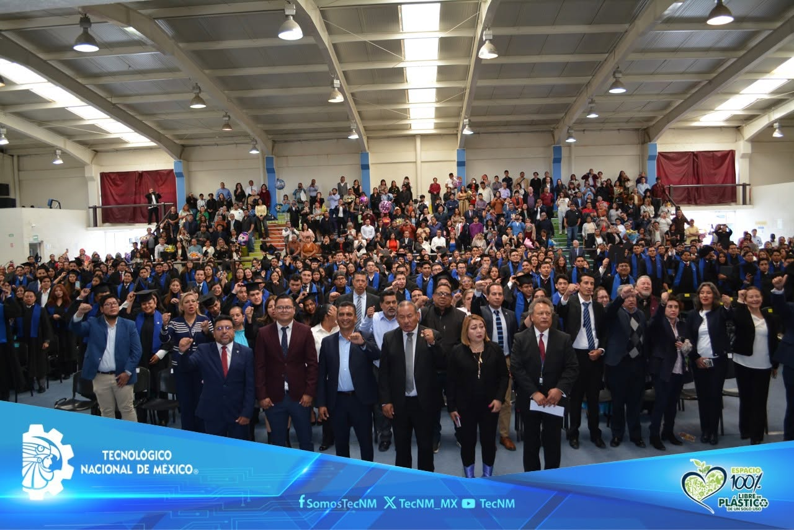
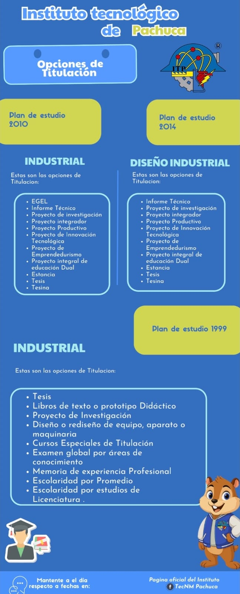

Titulación
Conoce las modalidades de titulación, el procedimiento institucional y los recursos necesarios para obtener tu título profesional.
Conoce las modalidades de titulación, el procedimiento institucional y los recursos necesarios para obtener tu título profesional.


La titulación profesional es el proceso mediante el cual el egresado obtiene el título que acredita oficialmente la conclusión de sus estudios de nivel superior.
Este trámite valida las competencias adquiridas durante la carrera y permite el ejercicio legal de la profesión, así como el acceso a mejores oportunidades laborales y de desarrollo académico.
Conoce paso a paso el proceso que debes seguir para realizar tu titulación y completar correctamente los trámites correspondientes.
Manda una solicitud por correo al departamento con la opción de titulación seleccionada.
Asigna un asesor para cualquier forma de titulación de las opciones antes mencionadas, a excepción del EGEL.
Realiza el trabajo correspondiente a la opción de titulación.
Asigna revisores para el trabajo. Una vez concluida la revisión, se realiza una liberación de la revisión.
Envía al departamento por correo el documento de la liberación de la revisión.
Emite un oficio de liberación.
Debe acudir al Centro de Información para que se le selle y deberá donar un libro al Centro de Información.
Consultar procedimiento de donación →Emite el oficio de donación de libros.
Realiza su cita para la revisión de sus documentos en Servicios Escolares (revisar requisitos).
Emite una constancia de no inconveniencia si los documentos están bien.
Podrá llevar a cabo su acto de recepción.
Manda una solicitud por correo al departamento con la opción de titulación seleccionada.
Presenta su documento que avale su aprobación del examen EGEL al departamento.
Emite un oficio de liberación.
Realiza su cita para la revisión de sus documentos en Servicios Escolares (revisar requisitos).
Emite una constancia de no inconveniencia si los documentos están bien.
Podrá llevar a cabo su acto de recepción.
Una vez completados los pasos, podrás llevar a cabo tu acto de recepción.
Si deseas continuar tu formación de posgrado, estas convocatorias pueden ayudarte a financiar tus estudios y proyectos de investigación.
Apoyos para estudios de maestría, movilidad académica y estancias de investigación, incluyendo colegiatura, manutención y otros apoyos según la convocatoria vigente.
Información completa
Programas de apoyo para estudiantes de posgrado registrados en el Sistema Nacional de Posgrados, orientados a cubrir gastos de manutención durante los estudios de maestría.
Consultar convocatorias